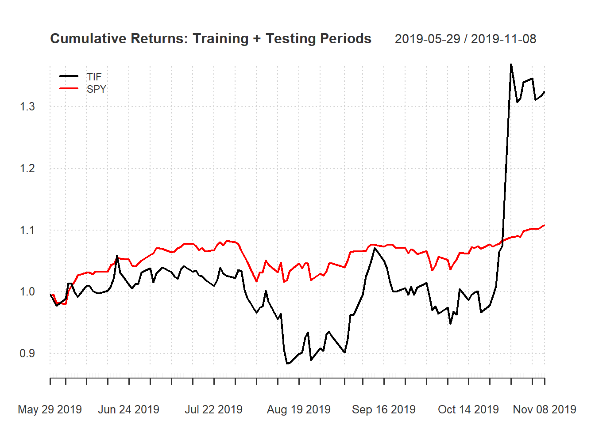
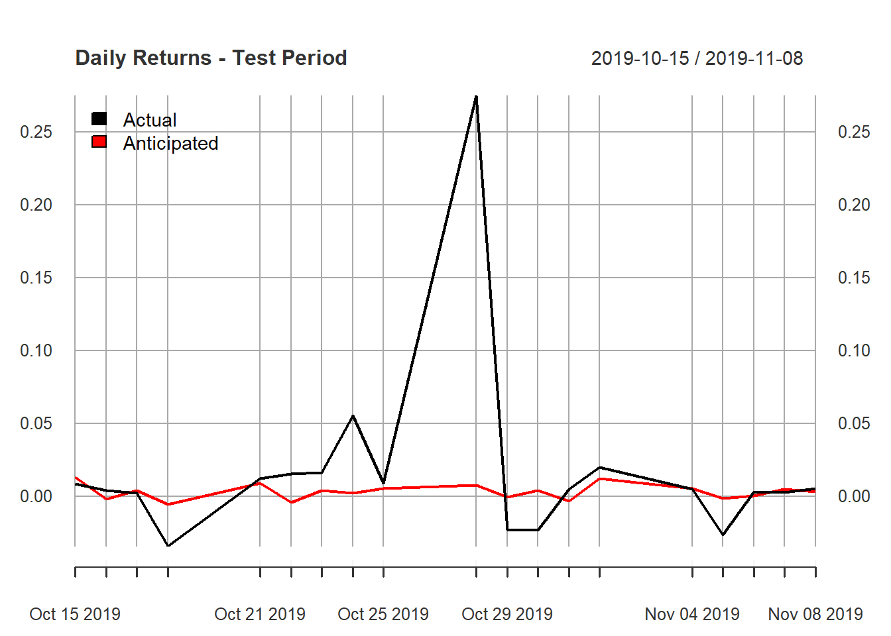

For this particular project, I will investigate whether insider trading occured prior to the announcement of LVMH acquring Tiffany and whether the market follows semi-strong market efficieny theory.
The benchmark model that I will be using is CAPM.
#Tidyquant; Performance Analytics; xts.
October 25th (after market close) LVMH announced that it will acquire Tiffany at USD135 per share, indicating that Tiffany stock price should be close to USD135 immediately when the market opens.
stock <- "TIF" #Stock Ticker
market <- "SPY" #Market Ticker (Other alternatives might be ETFs focusing on NYSE or NASDAQ)
event_date <- "2019-10-25" #Date: YYYY-MM-DD
beg_date <- date(event_date)-150 #150 = Number of trading days before event to create benchmark.
end_date <- date(event_date)+15 #15 = Number of trading days after event.
period <- "daily" #Periodicity
stock_data <- getSymbols.yahoo(Symbols = stock,
env = .GlobalEnv,
return.class = "xts",
index.class = "Date",
from = beg_date,
to = end_date,
periodicity = period)
market_data <- getSymbols.yahoo(Symbols = market, #The downloading of the stock data can be consolidated.
env = .GlobalEnv,
return.class = "xts",
index.class = "Date",
from = beg_date,
to = end_date,
periodicity = period)
#Fix and clean data set.
data <- cbind.xts(TIF$TIF.Adjusted, SPY$SPY.Adjusted) #Combine
names(data) <- c("TIF", "SPY") #Name Columns
data <- ROC(data) #Convert Adjusted Prices to Daily Returns (ROC = Rate of Change)
data <- na.omit(data) #Remove any NA/empty rows.
head(data)## TIF SPY
## 2019-05-29 -0.0040658049 -0.006733275
## 2019-05-30 -0.0085144269 0.002727490
## 2019-05-31 -0.0104934095 -0.013567025
## 2019-06-03 0.0118251130 -0.002546144
## 2019-06-04 0.0256200399 0.021474532
## 2019-06-05 -0.0006488263 0.008624799chart.CumReturns(data, wealth.index = TRUE, main = "Cumulative Returns: Training + Testing Periods", legend.loc = "topleft") #Graph to illustrate TIF returns relatively to SPY returns. 
Regression is based on 140 days before the announcement happened - 10 days. With this regression analysis, we will be able to create a CAPM model, which historically has explained ~70% of actual returns. Conventionally, you remove the risk free rate from ri and rm, but that is not as important when doing an event study.
regression_analysis <- lm(TIF ~ SPY,
data = data[1:(match(date(event_date), table = index(data))-10),])
#We want to investigate whether there are any abnormal returns shortly before the event. Therefore, we remove 10 days prior to the announcement date (This is when we anticipate insider trading on a larger scale).
summary(regression_analysis)#Based on the t and p-values, we fail to reject the H0: intercept (alpha) = 0, but we have enough evidence to reject H0: beta = 0. Therefore, we can create a model that states Ri = Beta * Rm.##
## Call:
## lm(formula = TIF ~ SPY, data = data[1:(match(date(event_date),
## table = index(data)) - 10), ])
##
## Residuals:
## Min 1Q Median 3Q Max
## -0.029795 -0.009811 0.000414 0.009824 0.034124
##
## Coefficients:
## Estimate Std. Error t value Pr(>|t|)
## (Intercept) -0.0006902 0.0014005 -0.493 0.623
## SPY 1.3194274 0.1515507 8.706 1.03e-13 ***
## ---
## Signif. codes: 0 '***' 0.001 '**' 0.01 '*' 0.05 '.' 0.1 ' ' 1
##
## Residual standard error: 0.01368 on 94 degrees of freedom
## Multiple R-squared: 0.4464, Adjusted R-squared: 0.4405
## F-statistic: 75.8 on 1 and 94 DF, p-value: 1.033e-13beta <- regression_analysis$coefficients[2]
alpha <- regression_analysis$coefficients[1]#Not to be used due to too low T-value.Since we already know the future returns of the market (SPY), we will be utilizing ex-post forecasting, meaning that the independent variable (SPY) is given and not forecasted alongside the dependent variable (TIF).
comp.data <- cbind.xts(data[])#Combine Actual and Anticipated returns to one data frame.
comp.data <- cbind.xts(tail(data[,1],nrow(data) - (match(date(event_date), table = index(data))-9)),
((tail(data[,2],nrow(data) - (match(date(event_date), table = index(data))-9)))*beta))
names(comp.data) <- c("Actual", "Anticipated")
plot(comp.data, main = "Daily Returns - Test Period", legend.loc = "topleft")
#This Graph does not explain whether there were any abnormal returns.Abnormal returns will be based on t-test: (Actual Returns - Expected Returns)/Standard Error.
Expectation: Abnormal Returns the days after the announcement, since it was made at market close. Abnormal returns before would suggest insider trading.
Expectation: Only abnormal returns on the day after the announcement. Any adjustments thereafter should not occur unless new information arises.
t_value <- 1.96 #t-critical value with double tail with an alpha of 0.05 with infinite observations. This might need adjustments if the data-set is considerbly small.
residual_standard_error <- summary(regression_analysis)$sigma#Extract S.E. from regression model.
abnormal_analysis <- cbind.xts(comp.data$Actual,
comp.data$Anticipated,
comp.data$Actual-comp.data$Anticipated,
(comp.data$Actual-comp.data$Anticipated)/residual_standard_error)
names(abnormal_analysis) <- c("R", #Actual Return;
"E(R)", #Expected Return;
"AR", #Abnormal Return;
"t-AR") #t-value of Abnormal Return.
round(abnormal_analysis,3)#Table of ## R E(R) AR t-AR
## 2019-10-15 0.009 0.013 -0.004 -0.321
## 2019-10-16 0.004 -0.002 0.006 0.443
## 2019-10-17 0.002 0.004 -0.002 -0.140
## 2019-10-18 -0.034 -0.006 -0.029 -2.085
## 2019-10-21 0.012 0.009 0.003 0.235
## 2019-10-22 0.015 -0.004 0.020 1.441
## 2019-10-23 0.016 0.004 0.012 0.891
## 2019-10-24 0.055 0.002 0.053 3.872
## 2019-10-25 0.009 0.005 0.004 0.261
## 2019-10-28 0.275 0.007 0.267 19.541
## 2019-10-29 -0.023 0.000 -0.022 -1.635
## 2019-10-30 -0.023 0.004 -0.027 -1.992
## 2019-10-31 0.005 -0.004 0.009 0.622
## 2019-11-01 0.020 0.012 0.008 0.558
## 2019-11-04 0.005 0.005 0.000 -0.019
## 2019-11-05 -0.027 -0.001 -0.025 -1.831
## 2019-11-06 0.003 0.000 0.003 0.207
## 2019-11-07 0.002 0.005 -0.002 -0.157
## 2019-11-08 0.005 0.003 0.002 0.153abnormal_days <- subset(abnormal_analysis, abs(`t-AR`) > t_value)#Filter out days with no abnormal
abnormal_days## R E(R) AR t-AR
## 2019-10-18 -0.03432336 -0.005788029 -0.02853533 -2.085272
## 2019-10-24 0.05514280 0.002154200 0.05298860 3.872238
## 2019-10-28 0.27481421 0.007416065 0.26739814 19.540608
## 2019-10-30 -0.02321701 0.004040843 -0.02725785 -1.991917Disclosure: I have not looked at specific dates prior to or after the anouncement. These are speculations trying to explain any abnormal returns.
2019-10-18: As an effort not to be acquired by LVHM, Tiffany might have tried to dilute its outstanding shares so that a potential take-over would become more difficult (Poison Pill). However, this must most likely be announced by the company. Moreover, the absolute t-value is relatively close to t-critical value, providing us with a false-positive.
2019-10-24: A company can acquire up to 5% of shares before announcing an acqusition, so this would most likely be the case. However, it raises the question why LVMH would do it the day before and not successively over the period of a few weeks. If insider trading was the cause for the abnormal return, a few traders/funds/actors with insufficient funding to affect the market greatly purchased the stocks.
2019-10-28: The market acted accordingly to semi-strong market efficiency hypothesis.
2019-10-30: Market might have corrected itself as it overreacted to the announcement (this would be a violation to semi-strong market efficiency). Perhaps LVHM and Tiffany were unable to create anticipated synergies, justifying a decrease in price while S&P500 increased in value. However, as for 2019-10-18, the t-value is close to the t-critical value, so it might not be reliable.
For 10/18 and 10/30, epsilon might be unusually large, explaining any abnormal returns. On average, we assume epsilon = 0.
Comments:
This is a simple form of event study that can be improved in numerous ways, such as implementing a benchmark with more factors (Fama-French) and calculating the standard error of each individual day.
An event study alone is insufficient to determine insider trading; it should serve as an indicator.